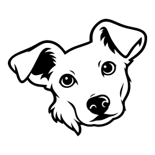

Gizlilik
10 Ekim 2026 · English
Blanca hiçbir şey toplamıyor. Kopyaladığın şey bilgisayarında kalıyor.
Blanca neyi tutuyor
Kopyaladığın metni, sana geri verebilmek için. Bu metin kendi bilgisayarındaki bir dosyada, belirlediğin kopya sayısı kadar tutuluyor, başka hiçbir yerde değil. Blanca menüsündeki Clear onu siliyor: son saat, son 24 saat, son ay ya da hepsi.
Parola yöneticisinin gizli diye işaretlediği kopyalar tutulmuyor, sen bu ayarı kapatmadıkça.
Blanca ne gönderiyor
Hiçbir şey. Hesap yok, senkronizasyon yok, analitik yok, çökme raporu yok, reklam yok. Kopyaların Blanca üzerinden bilgisayarından çıkmıyor.
Mac App Store'dan gelen Blanca hiçbir ağ bağlantısı kurmuyor. Bu siteden gelen kopya ise yalnız Check for Updates'i seçtiğinde ya da blanca update çalıştırdığında GitHub'a bağlanıyor: en yeni sürümün hangisi olduğunu sormak ve onu indirmek için. O istek seninle ya da kopyalarınla ilgili hiçbir şey taşımıyor.
Mac'te Accessibility izni
Blanca, Accessibility altında izni tek bir iş için istiyor: senin yerine Command+V'ye basmak, böylece seçtiğin kopya yazdığın yere düşüyor. Ekranını ya da diğer uygulamaları okumuyor, yazdıklarını kaydetmiyor.
Diğer cihazlardan gelen kopyalar
iPhone ya da iPad'de kopyaladığın metin, Apple'ın Universal Clipboard'u üzerinden Mac'ine ulaşabiliyor. Bu, cihazlarınla Apple arasında. Blanca onu ancak Mac'inin panosuna düştükten sonra, diğer her kopya gibi görüyor.
Sorular
Tunca Üçer'e yaz: tuncaucer@gmail.com. Blanca'nın kaynak kodu GitHub'da; bu sayfadaki her iddia oradan doğrulanabilir.